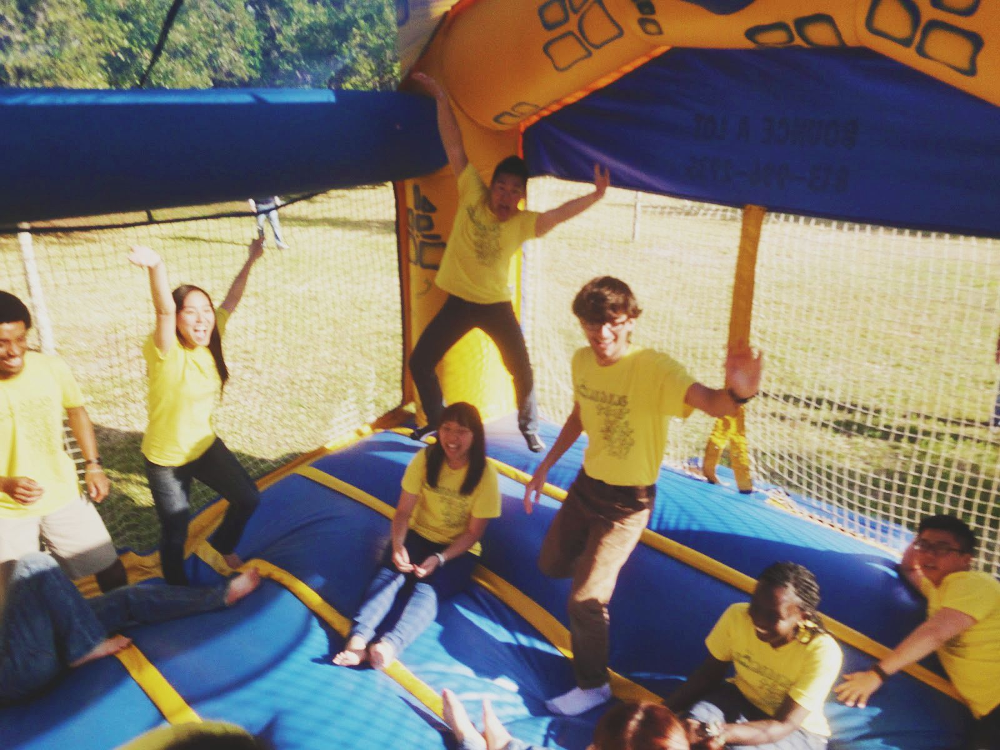
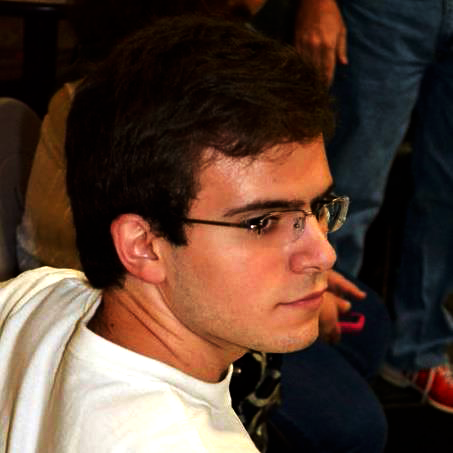
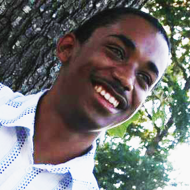
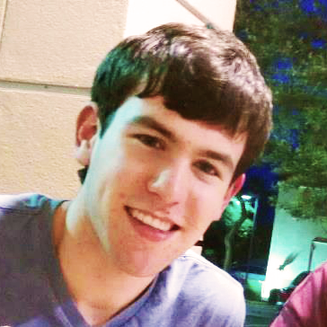
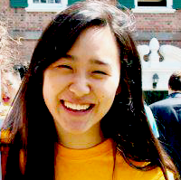

MEET THE
DROPLETS
DROPLETS
(That's what we call ourselves.)

-
Sarah Kang
Voice Part: Soprano
Major: Art History
College & Class: Berkeley 2014
Hometown: Anchorage, AK
-
Davynn Brown
Voice Part: Soprano
Major: African-American Studies
College & Class: Jonathan Edwards 2014
Hometown: Atlanta, GA
 Gene Kim
Gene Kim
(pitch)
Voice Part: Tenor
Major: History
College & Class: Calhoun 2014
Hometown: Fort Lee, NJ
Brandon Wang
Voice Part: Tenor
Major: Molecular, Cellular,
& Developmental Biology
College & Class: Jonathan Edwards 2014
Hometown: Pequannock, NJ
- 
Armando Ghinaglia
(pitch)
Voice Part: Bass
Major: Political Science
College & Class: Ezra Stiles 2014
Hometown: Katy, TX
 Andres Valdivieso
Andres Valdivieso
(business manager)
Voice Part: Bass
Major: Environmental Studies
College & Class: Pierson 2016
Hometown: Tampa, FL
- 
Terry (TJ) Stokes
Voice Part: Bass
Major: Latin American Studies
College & Class: Branford 2016
Hometown: San Francisco, CA
- 
Spencer Alexander
(puddle*)
Voice Part: Bass
Major: Electrical Engineering
College & Class: Saybrook 2014
Hometown: Gilbert, AZ
*spiritual mentor/social chair/bible-study leader- 
Shelly Kim
(puddle*)
Voice Part: Alto
Major: History
College & Class: Pierson 2015
Hometown: La Crescenta, CA
*spiritual mentor/social chair/bible-study leader Madeleine Witt
Madeleine Witt
Voice Part: Soprano
Major: Art & English
College & Class: Silliman 2016
Hometown: Rockford, IL